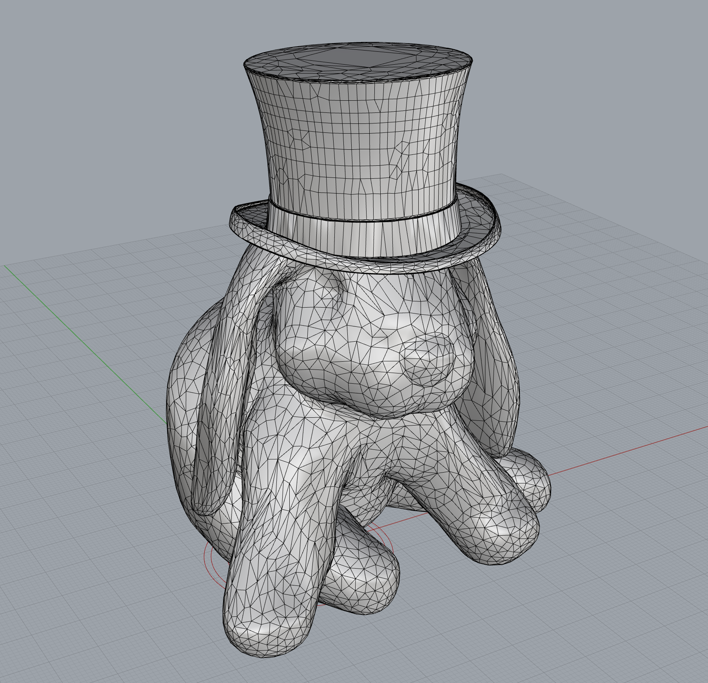
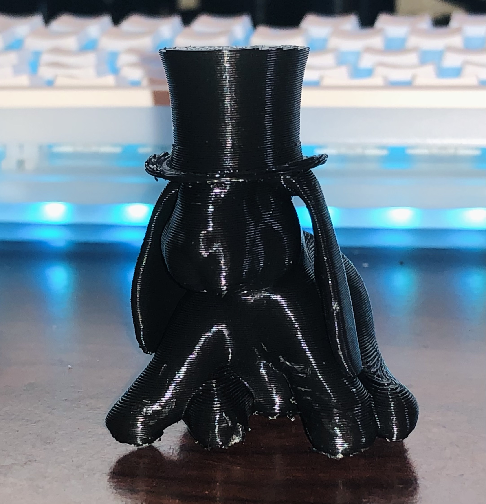
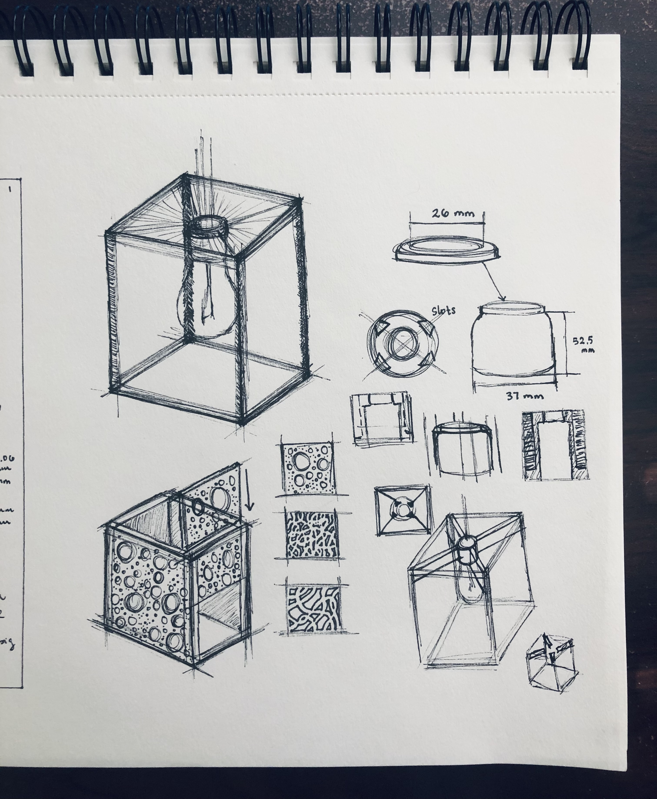
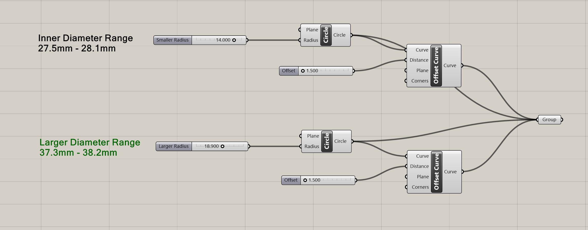
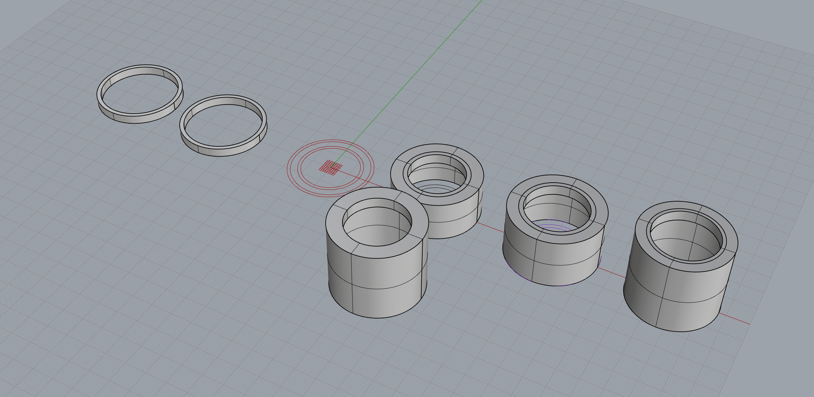
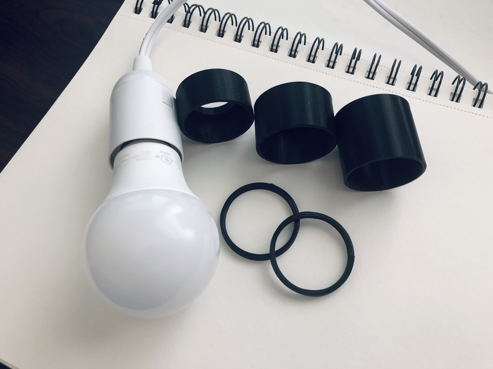
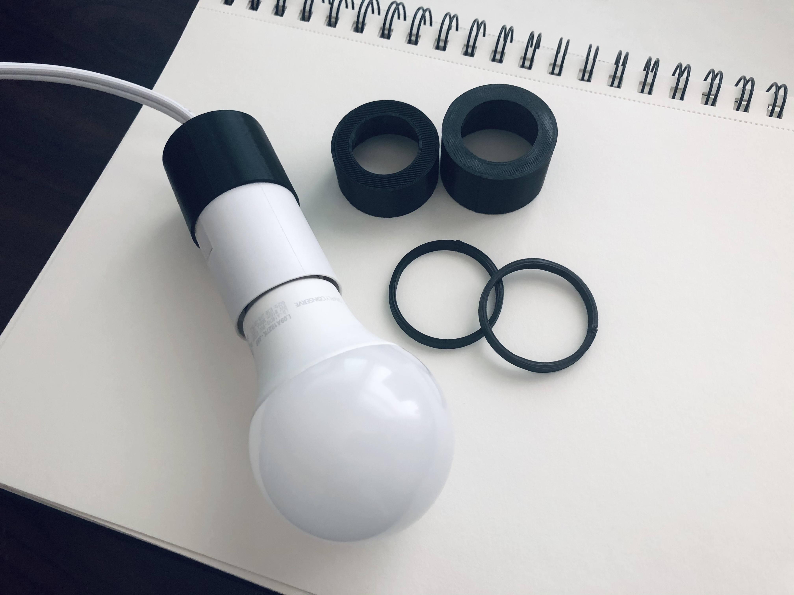

Getting Started With Grasshopper

The Goal
Combine 2 STL files to create a single printable mesh and get started on designing a lamp!
Combining a Bunny and a Hat
I found STL files of a bunny and a hat on Thingiverse! I put them into Rhino, used Edge Analysis to find problems, and fixed naked edges with FillMeshHole! After both meshes were closed, I combined the two meshes with MeshBooleanUnion. My STL (dogHat.STL) exported with no issues, and I ended up printing it! Turned out pretty cute. The original STL files for the bunny and dog can be found on my Github!


Starting My Lamp
For my lamp, I was interested in using dichroic film or mirror film. I sketched out my ideas in my sketchbook. My plan is to line polycarbonate sheets mirror film and slide these into slots in a 3D printed lampshade frame. This frame will then be attached to the inner component on the pendant light. After settling on an idea, I started working on the inner component to attach my lampshade to the light. I needed to find a good fit first, so I went through a lot of trial and error trying to determine a solid fit. Once a good fit is achieved, I'll modify the Rhino model to accommodate the other parts of the lampshape that will attach to the inner component.
    Download the Rhino and STL files for the dogHat mesh on GitHub.
Download the Rhino, Grasshopper, and STL files for the lamp's current work-in-progress on GitHub.